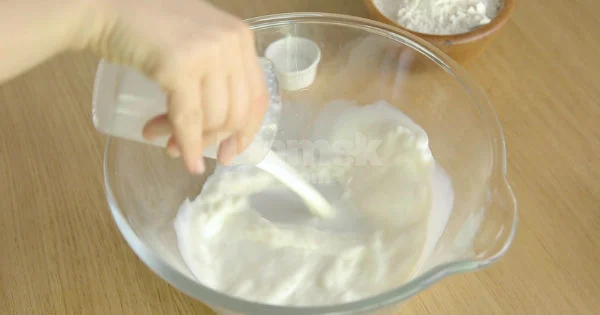
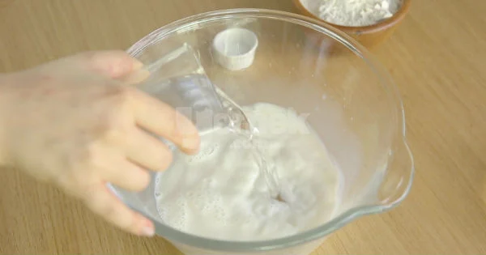
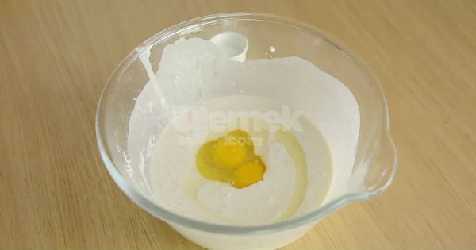
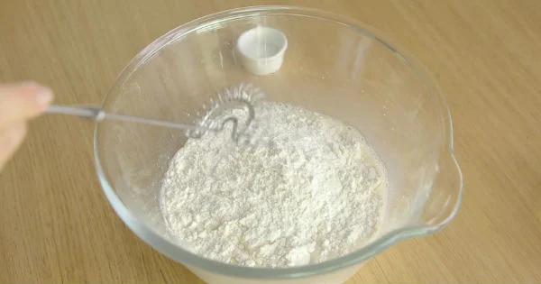
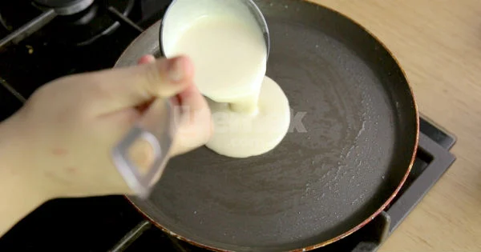
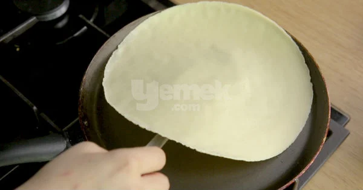
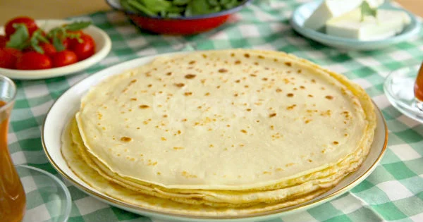

Tarif: Yemek.com şefi
Tarif: Yemek.com şefi
2 adet yumurta
1 su bardağı süt
1 su bardağı su
1 yemek kaşığı sıvı yağ
6 tepeleme yemek kaşığı un(1 su bardağı)
1 çay kaşığı tuz
Krep Tarifi için öncelikle 1 su bardağı sütü bir kaba alın.
Üzerine 1 su bardağı suyu derin bir karıştırma kasesine alın.
1 yemek kaşığı sıvı yağ, 2 adet yumurta ve 1 çay kaşığı tuzu da ekleyin.
Üzerine 6 yemek kaşığı unu ilave edip bir çırpıcı yardımıyla iyice karıştırın.Sonra pürüzsüz bir kıvam alana kadar çırpın ve 5 dakika dinlenmeye bırakın.
Hazırladığınız krep harcından küçük bir kepçe kadar doldurun. Hamuru yağladığınız kızgın tavaya dökün.
Hafifçe sallayarak hamurun ince bir şekilde tabanına yayılmasını sağlayın.Krepleri, orta ateşte göz göz olup, renk alana kadar arkalı önlü kızartın.
Pişen krepleri servis tabağına alın. Soğutmadan sevdiklerinizle paylaşın.
